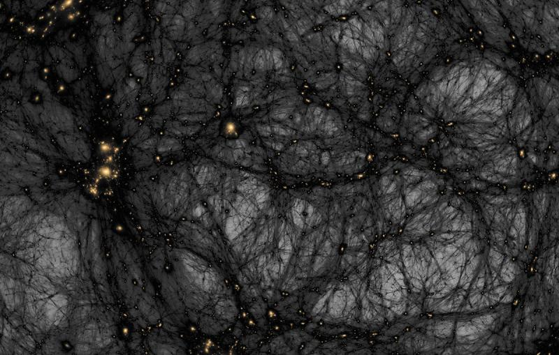

The Mystery of the Universe is one of the most fascinating topics in science and astronomy. Scientists still don’t fully understand many parts of how the universe works. Here are some of the biggest mysteries 🌌:
Dark Matter
One of the biggest mysteries is Dark Matter. Scientists believe that most of the matter in the universe is invisible and cannot be detected directly with telescopes. Dark matter does not produce light or energy, but its gravitational effects help hold galaxies together. Without it, many galaxies would not exist in their current form.
Dark Energy
Another important mystery is Dark Energy, a powerful force that is causing the universe to expand faster over time. Researchers discovered that the expansion of the universe is accelerating, but they still do not fully understand what dark energy actually is or how it works.
Black Hole
Black Hole also add to the mystery of the universe. These are extremely dense objects in space where gravity is so strong that nothing, not even light, can escape. Scientists believe that black holes exist at the center of many galaxies, but what happens inside them is still unknown.
Black Hole
A Black Hole is one of the most mysterious and fascinating objects in the universe. It is a region in space where gravity is so strong that nothing can escape from it, not even light. Because light cannot escape, black holes cannot be seen directly with normal telescopes. Scientists study them by observing the behavior of nearby stars, gas, and radiation. Black holes are formed when very massive stars collapse at the end of their life cycle, compressing a huge amount of mass into a very small space.
The idea of a black hole was first predicted in the 18th century by the English scientist John Michell in 1783. He suggested that a star could have gravity strong enough that even light could not escape from it. Later, in 1916, the famous physicist Albert Einstein developed the General Theory of Relativity, which mathematically predicted the possibility of black holes. However, Einstein himself initially doubted that such objects could really exist in nature. In the 1960s and 1970s, further research by scientists such as Stephen Hawking helped explain the physics of black holes and their behavior.
Black holes are generally discovered by observing their effects on nearby objects. For example, when a star or gas cloud gets too close to a black hole, it is pulled in by its powerful gravity. The material heats up and produces strong X-rays and other radiation that astronomers can detect with space telescopes. In 2019, scientists from the Event Horizon Telescope Collaboration captured the first image of a black hole located in the galaxy Messier 87. This historic achievement provided direct visual evidence that black holes exist.
There are different types of black holes depending on their mass. Stellar black holes are formed from collapsing stars and are usually several times more massive than our Sun. Supermassive black holes, which are millions or billions of times more massive than the Sun, exist at the centers of most galaxies. For example, the center of the Milky Way contains a supermassive black hole called Sagittarius A*
Dark Matter
Dark Matter is one of the greatest mysteries in modern astronomy. It is a type of matter that cannot be seen directly with telescopes because it does not emit, absorb, or reflect light. Scientists call it “dark” because it is invisible. Even though we cannot see it, dark matter is believed to make up about 27% of the universe, while normal matter (stars, planets, and galaxies) makes up only about 5%. The rest of the universe is thought to be made of Dark Energy.
The idea of dark matter was first proposed in the 1930s by the Swiss astronomer Fritz Zwicky. While studying the movement of galaxies in the Coma Cluster, he noticed that the galaxies were moving much faster than expected. According to the visible mass, the cluster should not have enough gravity to hold the galaxies together. Zwicky concluded that there must be some unseen mass providing the extra gravitational force, which he called “dark matter.”
Scientists cannot detect dark matter directly, but they observe its effects on galaxies and galaxy clusters. For example, the rotation of galaxies shows that stars at the outer edges move faster than they should if only visible matter existed. This suggests that a large amount of invisible matter surrounds galaxies, forming what scientists call a dark matter halo. Another way scientists detect dark matter is through gravitational lensing, where light from distant objects bends due to the gravity of unseen mass.
The exact nature of dark matter is still unknown. Scientists believe it might be made of unknown particles that do not interact with light or normal matter in the usual ways. Many experiments around the world are trying to detect these particles using underground detectors and powerful particle accelerators. Understanding dark matter could help scientists explain how galaxies formed and how the universe evolved after the Big Bang.

Dark Energy
Dark Energy is one of the greatest mysteries in modern astronomy and cosmology. It is a form of energy that fills space and is believed to be responsible for the accelerating expansion of the universe. Unlike normal matter and energy, dark energy cannot be seen or directly detected with telescopes because it does not emit light or radiation. Scientists estimate that dark energy makes up about 68% of the total energy and matter in the universe, making it the largest component of the cosmos.
The concept of dark energy became important in 1998 when two teams of astronomers studying distant exploding stars called Type Ia supernova discovered that the universe is expanding faster over time. These observations were made by the Supernova Cosmology Project and the High-Z Supernova Search Team. Their findings showed that gravity alone could not explain this accelerating expansion, suggesting the presence of a mysterious force pushing galaxies apart. This unknown force was later named dark energy.
The idea that space itself could contain energy was originally related to a concept introduced by Albert Einstein in his theory of General Relativity. Einstein added something called the cosmological constant to his equations, which represents a constant energy density filling space. Although Einstein initially introduced it to keep the universe static, scientists later realized that a similar concept could explain the accelerating expansion of the universe.
Dark energy affects the large-scale structure of the universe. As galaxies move farther apart, the influence of dark energy becomes stronger than the gravitational attraction between them. Because of this, the universe continues to expand at an increasing rate. This expansion began after the early growth of the universe that followed the Big Bang, which occurred about 13.8 billion years ago.
Despite many observations and theories, the true nature of dark energy remains unknown. Scientists are using powerful telescopes and space missions to study distant galaxies and cosmic radiation to understand it better. Future discoveries may reveal whether dark energy is a property of space itself or a completely new form of energy. Understanding dark energy is essential because it may determine the ultimate fate of the universe and help scientists unlock deeper secrets about the cosmos. 🌌✨